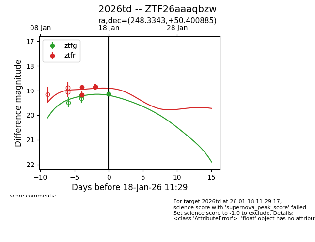
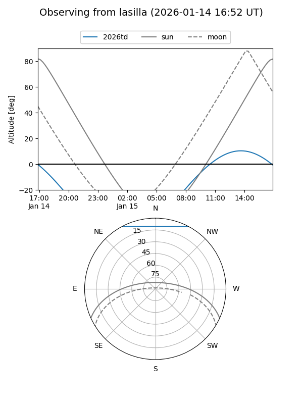
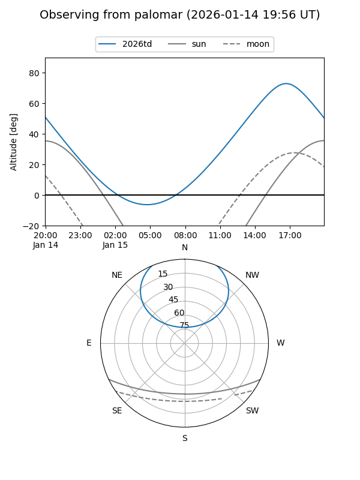
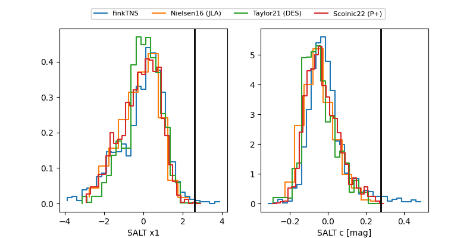

2026td
Target 2026td at 2026-01-25 13:11
Aliases and brokers:
FINK: link
Lasair: link
ALeRCE: link
TNS: link
YSE: link
alt names
ZTF26aaaqbzw (ztf,fink_ztf)
2026td (tns,yse)
Coordinates:
equatorial (ra, dec) = 248.3343,+50.40089
equatorial (HMS+DMS) = 16:33:20.23,+50:24:03.19
galactic (l, b) = (77.7061,+42.28878)
Flags:
Photometry:
last ztfg=19.49, ztfr=18.97
6 ztfg, 10 ztfr detections
Lightcurve

Visibility


Additional plots
